Sprocket Central Pty Ltd
Sprocket Central Pty Ltd , a medium size bikes & cycling accessories organisation.
Sprocket Central Pty Ltd needs help with its customer and transaction data. The organization has a large dataset relating to its customers, but its team is unsure how to effectively analyze it to help optimise its marketing strategy.
The client provided KPMG with 3 datasets:
- Customer Demographic
- Customer Addresses
- Transactions data in the past 3 months
Task 1: Data Quality Assessment
I decide to start the preliminary data exploration and identify ways to improve the quality of Sprocket Central Pty Ltd’s data.1. In Transaction dataset I identified blank values for customers in “Online “Order” and “Brands” data Columns.
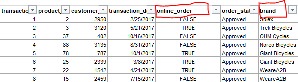
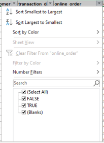
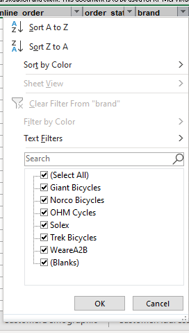
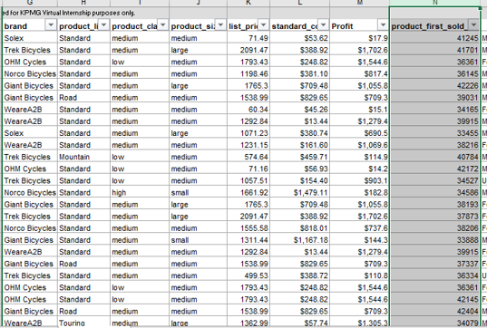
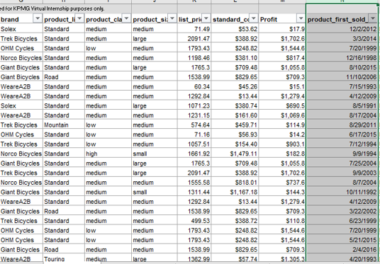
“F and Femal” with Female, “M” with “Male” and “U” with “Others”. I delete the irrelevant “default” column from the sheet.
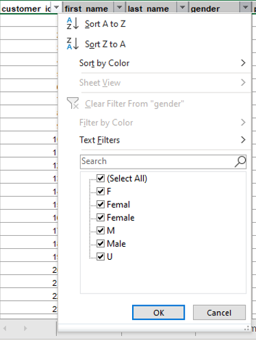
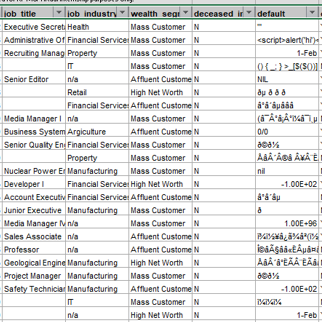
Task 2: Data Insights
Targeting high value customers based on customer demographics and attributes.For getting the insights I need to first combine the three datasets together and for that I used "Power Query"
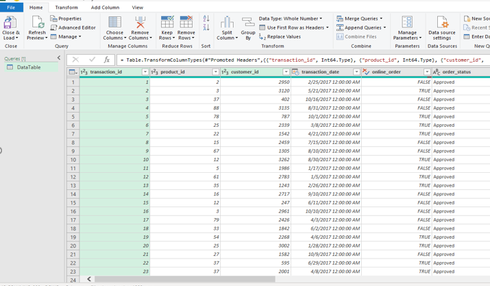
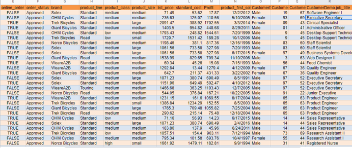
After Combining all the dataset together now its time to get the Insights. To know our best customers I did a Customer Segmentation using a RFM Model. This model tells us who and how many were our Platinum Customers.
To Calculate RFM Score first I need to get the R-Value by using the Transaction date then I can easily get the other values.
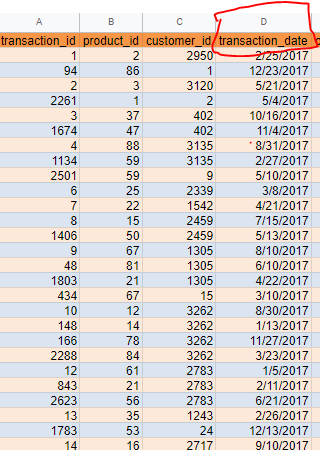
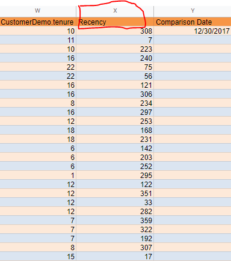
In the Next Step I used Pivot Table and got the RFM Values for Cutomer Segementation. After that I created a Visualization of Customer Profile RFM Values. This RFM is totally based on Numerical Summary Statistics.
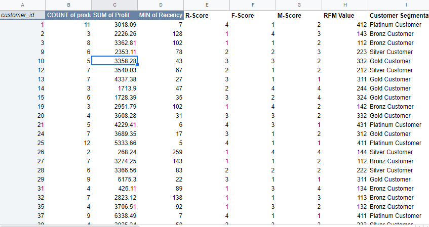
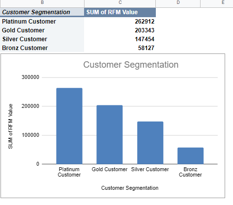
Customer Classification - Targeting High Value Customer
These Customers should be targeted.
Most of the High Value Customer will be Female compared to Male and working in the Financial, Health and Manufacturing Industry.
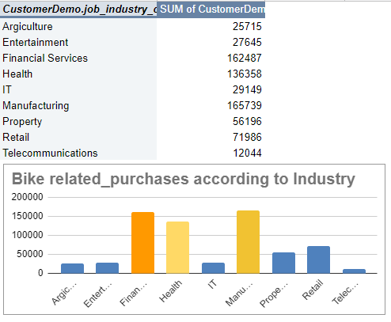
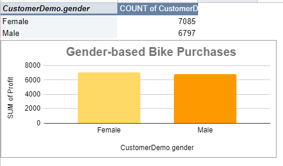
High Value Customers aged between 40-60
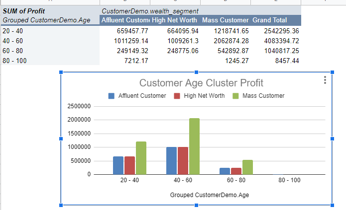
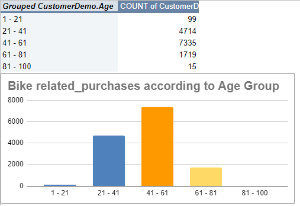